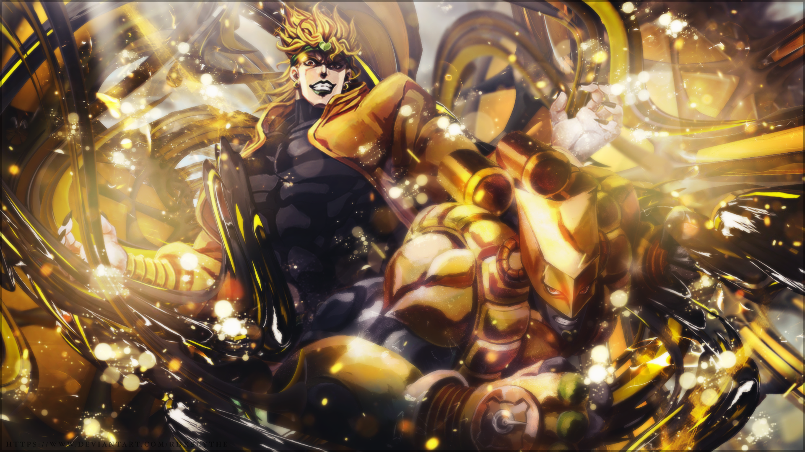
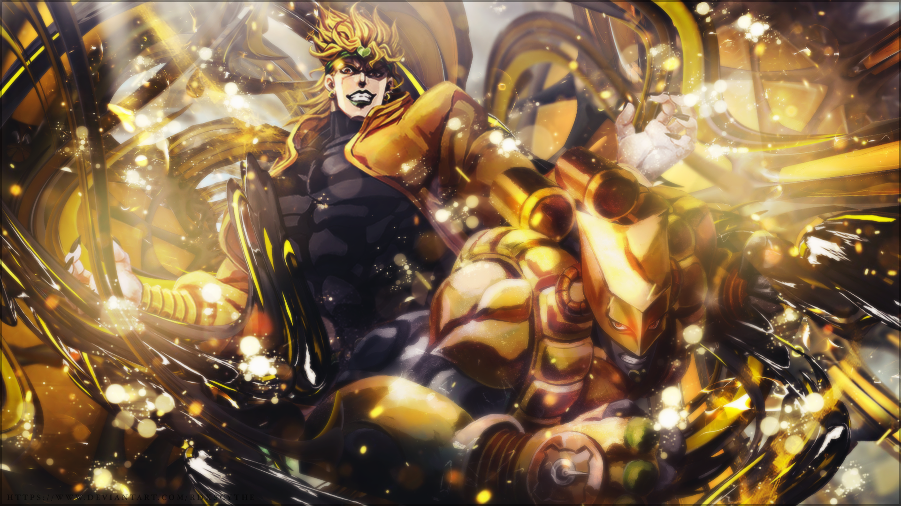

Jonathan Joestar
É o protagonista da primeira parte de JoJo's Bizarre Adventure, Phantom Blood, e o primeiro JoJo da série. Seu legado se estende por quase todas as seis primeiras partes da série, com personagens importantes como Joseph Joestar e Jotaro Kujo sendo seus descendentes.
Joseph Joestar
Joseph é o protagonista principal do segundo arco da história da série, Battle Tendency, e o neto do protagonista do primeiro arco, Jonathan Joestar.
Jotaro Kujo
Jotaro é bem duro exteriormente, tem um gênio forte e é bem grosseiro, mas também é leal, intenso e dedicado. Como todos os JoJo's da série ele é bem inteligente, mas normalmente deixa que seus punhos ou Star Platinum fale por ele.
Josuke Higashikata
Josuke é um adolescente experiente, confiante e corajoso. Amigável e leal, sua personalidade amável o ajuda a fazer amigos ao longo da história. A principal característica de Josuke é sua bondade geral, refletida em seu Stand, Crazy Diamond, que repara e cura.
Giorno Giovanna
Giorno é o filho ilegítimo de DIO, concebido com o corpo roubado de Jonathan Joestar. Ele fala de sua intenção de se juntar à poderosa gangue Passione e seu sonho de se tornar um "Gangstar". Giorno é um Usuário de Stand nato, empunhando a Gold Experience em batalha.
Jolyne Cujoh
Protagonista da Parte 6 e a sexta JoJo da série JoJo's Bizarre Adventure. Jolyne é a única mulher " JoJo " até hoje, e filha de Jotaro Kujo.
Dio Brando
Dio Brando é o primeiro antagonista a aparecer no anime JoJo's Bizarre Adventure, Dio veio de uma família humilde e por viver em um ambiente ruim com pessoas ruins desde cedo acabou se tornando uma pessoa maléfica e com sede de poder.